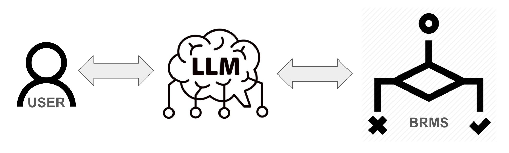
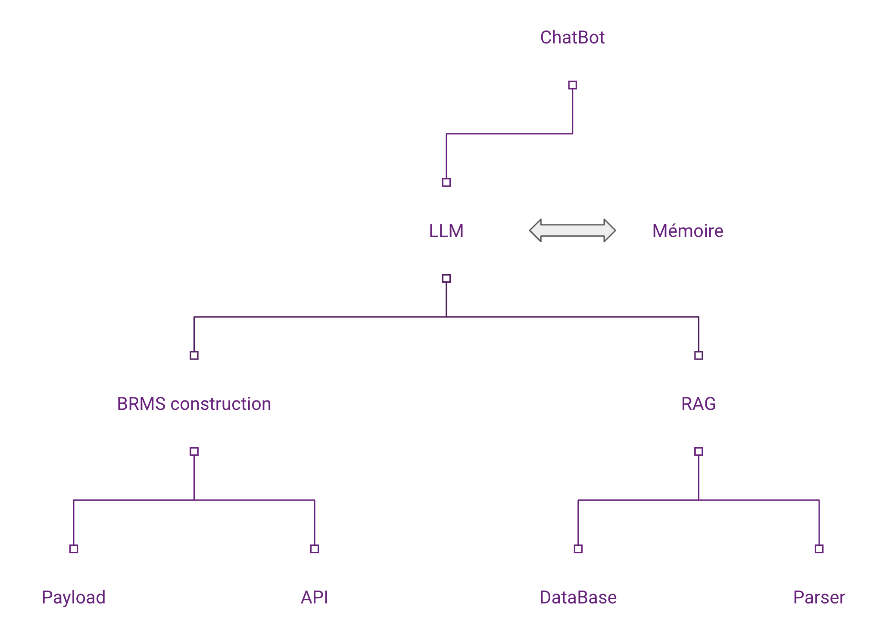

LLM integration with BRMS (Business Rule Management Systems)
Introduction
-
LLMs (Large Language Models) have revolutionized natural language processing (NLP).
- Understanding complex structures
-
BRMS (Business Rule Management Systems) tools for managing complex business rules.
- Critical systems
But
-
LLMs are excellent at understanding and generating text, but lack the rigor to respect strict business rules (Hallucination).
- Case in point: Air Canada refund problem caused by poorly integrated chatbot.
-
BRMS too limited for interaction
Benefits of BRMS-LLM integration
-
Increased compliance: LLM responses aligned with internal policies.
-
Reduced errors: expert system-based decisions.
-
Flexibility: combining the power of LLM with the rigor of BRMS. Complex reasoning
-
Clarification of decision-making processes
Architecture
 As you can see from the image above, the chatbot uses LLM to generate responses, but for one specific case, it uses BRMS to provide an expert answer.
 The architecture works like an agent, using the BRSM as a tool to make a decision in a specific case. It is a kind of artificial intelligence agent that uses function calls.
Integration workflow
We will describe a possible method of integrating business decision processes within a chatbot using a BRMS.
Decision process modeling
The decision process in a BRMS system can be modeled as a set of logical rules and conditional actions, often represented by a directed graph or decision tree. This mathematical model can be used to formalize the various stages in the decision-making process, based on inputs (data supplied by the user) and defined business rules.
Consider a set of rules \(R = \{r_1, r_2, \dots, r_n\}\), where each rule \(r_i\) can be represented by a logical implication of the form :
where \(C_i\) is a set of conditions (premises) and \(A_i\) is an action or decision to be taken if the conditions are met.
The decision process can be described by an algorithm that sequentially evaluates each rule in order of priority \(P(r_1) > P(r_2) > \dots > P(r_n)\). For a given input \(x\), the decision process determines the rule \(r_i\) such that the conditions \(C_i\) are satisfied, and applies the action \(A_i\).
Let's formulate this mathematically:
where \(x \models C_i\) means that \(x\) satisfies the conditions \(C_i\).
If several rules \(r_i\) and \(r_j\) are satisfied simultaneously (i.e. \(x \models C_i\) and \(x \models C_j\)), then the order of priority \(P\) determines which action is chosen. This can be expressed as :
This model can be extended by incorporating probabilities associated with each rule, to handle scenarios where the rules are not strictly deterministic. Finally, for integration with a wide language model (LLM), these rules can be used to filter or adjust LLM output, ensuring that any response generated conforms to predefined business rules.
Decision process integration modeling
Once the decision process has been modeled, we can integrate it into a chatbot.
Information extraction
First, the model extracts the relevant information from the user input text \(x\). Suppose the input is of the form: "Manon's insurance, she's 34 and lives in Paris ”. The aim is to extract the specific information, i.e. surname \(n\), first name \(p\), age \(a\), and address \(d\). This process can be modeled by a function \(f_{ext}\) such that :
where \(f_{ext}\) is an entity extraction function.
Building the decision payload
Once the information has been extracted, it is used to build a payload that will be sent to a BRMS system. The payload is a data structure represented mathematically by a vector \(\mathbf{v}\) :
where \(\text{ID}\) is a relevant identifier and \(\text{Amount}\) is an initial value.
Business rule evaluation
The vector \(\mathbf{v}\) is sent to a rules engine \(R\), represented by a function \(f_{BRMS}\) :
where decision is the BRMS output after rule evaluation.
Validation and Response
Finally, the decision is validated and a response is constructed:
If an error is detected:
Process summary
Integration Proposal
API integration
def payload_construction(nom:str,prenom:str,age:int,adresse:str, maisonPrice:int, sinistre:str = "Incendie"):
payload = {
"personne": {
"name": prenom,
"lastName": nom,
"address": adresse,
"disaster": sinistre,
"age": age,
"maisonPrice": maisonPrice
}
}
return payload
Extract information from user input
def brmsCall(user_input:str)->str:
request = (
"Prompt + few shot learning: "
"Voici la phrase cible: " f"{user_input}"
)
elements = ollama.generate(
model="mistral:latest",
prompt=request,
stream=False,
options= {'temperature': 1}
)
elements2 = re.sub(r'[^a-zA-Z0-9;]', '', elements["response"])
elements3 = [elem.strip() for elem in elements2.split(';') if elem.strip()]
payload = pc.payload_construction(
nom=elements3[0] if len(elements3) > 0 and elements3[0] else None,
prenom=elements3[1] if len(elements3) > 1 and elements3[1] else None,
age=extract_number(elements3[2]) if len(elements3) > 2 and elements3[2] else None,
adresse=extract_number(elements3[3]) if len(elements3) > 3 and elements3[3] else None,
maisonPrice= extract_number(elements3[4]) if len(elements3) > 4 and elements3[4] else None
)
api = ap.ApiCall(url="http://localhost:8080/ruleflow", payload=payload, headers={'Content-Type': 'application/json'})
test_completion, erreur = api.test_arguments()
if erreur:
sentence = "Tu dois indiquer à ton interlocuteur que tu ne peux pas répondre pour la raison suivante : ", test_completion, "Il dois ipérativement te donner toutes les informations dans l'ordre si possible. \n\n Répond uniquement que tu ne peux pas répondre sans ces informations primordiales! Aide toi des raisons données pour expliquer. \n\n"
solve = False
else:
resApi:dict = api.call_api() # Appel API
if isinstance(resApi, dict) and 'res' in resApi:
answer = resApi['res'].get('montantIndemnisation', "Indemnisation inconnue")
else:
answer = "Erreur : réponse invalide de l'API"
sentence = f"D'après les informations renseignées parl'utilisateur, le prix de l'indemnité calculée par le modèle est : {answer}"
solve = isinstance(resApi, dict) and 'res' in resApi # True si la clé 'res' est bien présente
print(f"solve : {solve}")
return sentence, elements3, solve
Keeping information in memory
if self.assurance_phase:
assurance_output = "Voici le retour du système expert :
" + sentence
if solve_statue:
self.memoire_contextuel_assurance = ""
else:
self.memoire_contextuel_assurance = f"Ces éléments sont à retenir : {liste_element}"
else:
assurance_output = ""
self.memoire_contextuel_assurance = ""
Demo
This demo is in french :
All the code is available on Github: